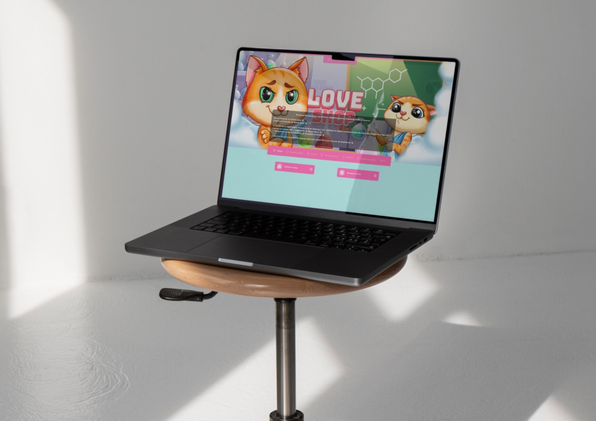

Технические требования loveshop18: полное руководство для покупателей

Добро пожаловать в мир цифровых активов! Для того чтобы работа с нашими продуктами была максимально комфортной и эффективной, мы подготовили подробное описание технических требований loveshop18. Эта информация поможет вам убедиться, что ваше оборудование и программное обеспечение соответствуют необходимым стандартам.
Основные системные требования
Большинство цифровых товаров в нашем магазине совместимы с современными операционными системами и не требуют мощного оборудования loveshop1300. Однако для оптимальной работы рекомендуем придерживаться следующих параметров.
Операционные системы
Для настольных компьютеров и ноутбуков:
Windows 10 или новее (64-битная версия)
macOS 11.0 (Big Sur) или новее
Актуальные версии дистрибутивов Linux (Ubuntu 20.04+, Fedora 34+)
Для мобильных устройств:
Android 9.0 или новее
iOS 14 или новее
Аппаратные требования
Точные требования зависят от типа приобретаемого цифрового актива, но общие рекомендации включают:
Процессор: Современный 2-ядерный процессор с тактовой частотой не менее 2 ГГц
Оперативная память: 4 ГБ ОЗУ (рекомендуется 8 ГБ для работы с графическими элементами)
Свободное место на диске: Не менее 2 ГБ для установки необходимого программного обеспечения
Разрешение экрана: 1280×720 пикселей или выше
Графическая карта: Интегрированная или дискретная с поддержкой DirectX 11 или OpenGL 3.3
Программное обеспечение и дополнительные компоненты
Для работы с различными типами цифровых активов может потребоваться установка дополнительного программного обеспечения.
Текстовые редакторы: Microsoft Word, LibreOffice, Google Docs
Программы для работы с 3D-графикой: Blender, 3ds Max, Maya
Аудиоредакторы: Audacity, Adobe Audition
Видеоредакторы: Adobe Premiere, DaVinci Resolve, Final Cut Pro
Требования к интернет-соединению
Стабильное интернет-соединение необходимо для загрузки цифровых товаров и получения обновлений.
Минимальная скорость: 5 Мбит/с для скачивания
Рекомендуемая скорость: 25 Мбит/с или выше для быстрой загрузки объемных файлов
Стабильность соединения: Рекомендуется проводное подключение или стабильный Wi-Fi
Требования к безопасности
Для защиты ваших цифровых активов и личной информации мы рекомендуем:
Установить актуальную версию антивирусного программного обеспечения
Регулярно обновлять операционную систему и приложения
Использовать надежные пароли для учетных записей
Включить двухфакторную аутентификацию где это возможно
Создавать резервные копии важных файлов
Совместимость с мобильными устройствами
Многие наши цифровые активы оптимизированы для мобильного использования. Для комфортной работы убедитесь, что ваше устройство соответствует следующим требованиям:
Достаточный объем внутренней памяти для хранения файлов
Актуальная версия операционной системы
Необходимые приложения для просмотра или редактирования файлов
Стабильное интернет-соединение для загрузки контента
Рекомендации по оптимизации рабочего процесса
Для максимальной эффективности при работе с нашими цифровыми активами рекомендуем:
Организовать систему папок для хранения загруженных файлов
Использовать облачные хранилища для резервного копирования
Регулярно очищать кэш браузера и временные файлы
Обновлять драйверы устройств, особенно графических карт
Использовать менеджеры паролей для безопасного хранения учетных данных
Решение распространенных проблем
Если у вас возникают трудности с использованием наших цифровых активов, проверьте следующие моменты:
Соответствие вашего оборудования минимальным требованиям
Наличие необходимого программного обеспечения
Достаточное количество свободного места на диске
Стабильность интернет-соединения
Отсутствие конфликтов с антивирусным программным обеспечением
Поддержка и обновления
Мы постоянно работаем над улучшением совместимости наших продуктов с различными системами. Технические требования могут периодически обновляться в соответствии с изменениями в технологиях и программном обеспечении.
Призыв к действию: Теперь, когда вы ознакомились с техническими требованиями loveshop18, вы готовы к комфортной работе с цифровыми активами loveshop13bizloveshop2 com. Посетите наш магазин LoveShop для покупки качественных цифровых продуктов, которые идеально подойдут для ваших проектов и задач!